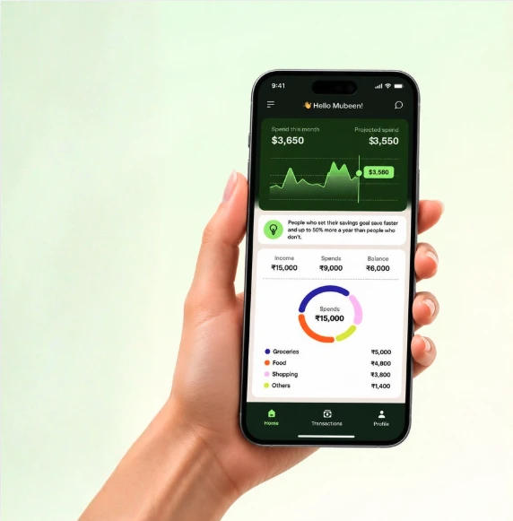

How I designed a maritime trading dashboard in 5 days using an AI workflow.
From trader research → design system → UI → working product - all in 5 days using Claude Code.

Designing human-centered AI experiences with exceptional craft, thoughtful product judgment and systems thinking.
I write about my design thinking and processes.
ReadCool stats
From trader research → design system → UI → working product - all in 5 days using Claude Code.
When a booking workflow became buried in WhatsApp, spreadsheets, and manual coordination, I redesigned the entire experience and turned it into a working product—with live availability, payments, and automated confirmations.

A self-directed exploration focused on visual design, product UI, and brand expression. I developed a distinctive visual direction and translated it across 40+ screens, covering onboarding, home, transactions, and profile. I also built the design patterns and visual guidelines needed to keep the experience cohesive and scalable.

As the founding Product Designer, I worked directly with the CEO to shape the product from the ground up, while hiring and managing the design team. Designed the core product, built the design system and design process, and shipped key experiences across two banking partners.

Foundations, a 12-component library, and a real operations dashboard built entirely from it - documented the same way every pattern should be: definition, anatomy, states, usage notes.

Alongside the product work at Converj, I hired and mentored the design team - establishing workflows and design standards, and turning a single-person design function into a structured, high-output team.
If you're building something and need clarity, structure, and execution, I'd love to hear about it.
© Mubeen Ansari. Powered by Codex and a few days of sleepless nights.